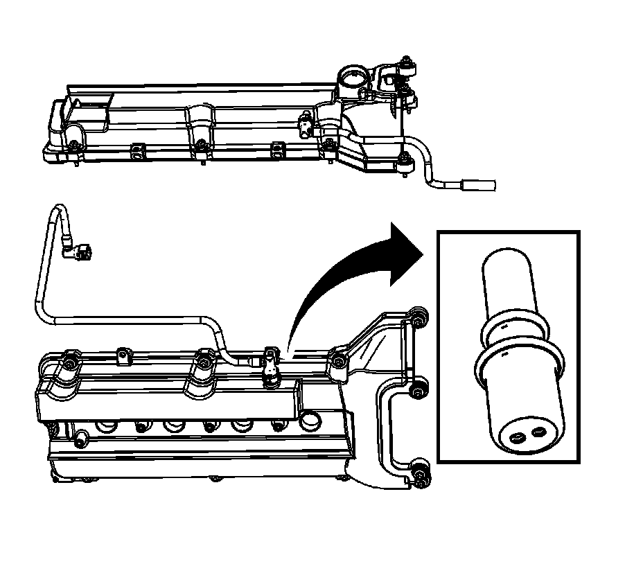

Positive Crankcase Ventilation: Description and Operation
Crankcase Ventilation System Description

A "closed type" positive crankcase ventilation system is used to consume crankcase vapors created during the combustion process instead of venting them to the atmosphere.
Filtered fresh air is supplied to the crankcase through a PCV fresh air tube connecting from the air duct to the LH camshaft cover PCV fitting. In the crankcase, the fresh air mixes with blow-by gases and then is passed through a positive crankcase ventilation (PCV) orifice fitting located in the RH camshaft cover. The air/blow-by mixture is passed into the intake manifold through a foul air PCV tube.
The PCV orifice fitting restricts the flow rate of the blow-by gases using two small orifice holes located at the end of the PCV fitting. If abnormal operating conditions arise, the system is designed to allow excessive amounts of blow-by gases to back-flow through the PCV system fresh air tube back into the air duct in order to be consumed by normal combustion. The PCV orifice fitting is not serviceable. If the orifice fitting can not be unplugged, the camshaft cover must be replaced.